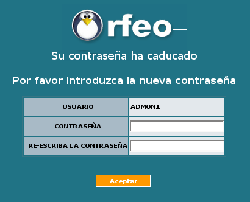
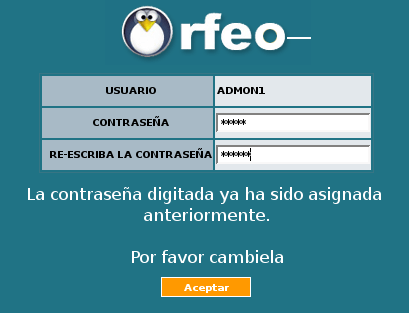
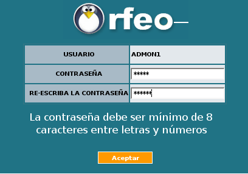
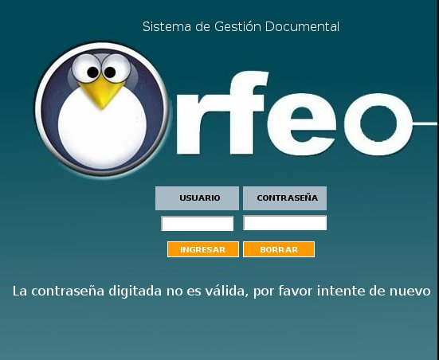
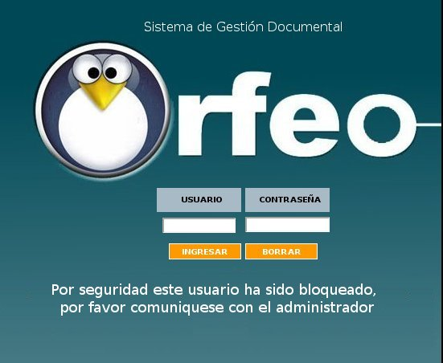

CU-ORFEO-52
Políticas
de seguridad en Orfeo
1.
Descripción
La
seguridad de la información deberá garantizar:
confidencialidad, integridad y disponibilidad. Esto se logrará
en la medida que se implante un conjunto de controles adecuados, que
pueden ser políticas, prácticas, procedimientos,
estructuras organizaciónales y funciones de software. Es
necesario establecer estos controles para asegurar que se cumplan los
objetivos específicos de seguridad.
La
seguridad de la información tiene una necesidad que nace de la
amplia gama de fuentes que amenazan con poner en riesgo los tres
factores básicos: confidencialidad, integridad y
disponibilidad. Fuentes como virus informáticos, ataques de
intusión, espionaje, sabotaje, etc. son cada vez más
comunes, ambiciosos y sofisticados y dada la dependencia de los
sistemas y servicios de información implica que las
organizaciones son más vulnerables a las amenazas de
seguridad.
2. Módulos que se deben cambiar
2.Gestión de cuentas de los usuarios de ORFEO.
2.1. El responsable de cada grupo debe confirmar cada 3 meses los
permisos asignados a cada uno de los usuarios generando el reporte de
ayuda de ORFEO que deberá enviar via mail al servicio de soporte.
3. Administración de contraseñas y control de acceso
de
las cuentas de ORFEO
3.1.1 Los cambios de contraseña se solicitarán
automáticamente por el sistema cada 3 meses.

3.1.2 Se deberá controlar en el sistema que una
contraseña ya utilizada no podrá ser asignada nuevamente
para el mismo usuario.

3.1.3 Las claves o contraseñas deben tener una longitud
mínima de 8 caracteres la cual debe ser una combinación
de letras y números.

3.1.4 No se permitirá el ingreso de un grupo de personas a
algún recuros compartido, base de datos, archivos, etc, con un
mismo usuario y contraseña. Para este caso cada usuario
deberá realizar su ingreso al recurso compartido con su usuario
y contraseña-
3.1.5 Al ingresar un usuario nuevo al sistema, este ingresará
con el login asignado y su contraseña igual, pero el sistema
validará que es un usuario nuevo y por lo tanto
solicitará el cambio de contraseña.
3.1.7 Para evitar posibles intentos de ingreso a un usuario sin
autorización del dueño, después de haber intentado
3 veces su ingreso, la contraseña se bloqueará. Solamente
el administrador podrá activarla nuevamente.


3.1.8 Si un usuario se encuentra en al sistema y se detecta inactividad
durante 30 minutos, se debe cerrar la sesión. Para reestablecer
la sesión el usuario se deberá autenticar nuevamente.
3.1.9 Se debe llevar un registro (logs) de los diferentes ingresos y
desconexiones del sistema de un usuario, guardando los datos de login,
documento, fecha y hora de ingreso, fecha y hora de desconexión,
etc. los cuales se guardarán durante 3 meses, tiempo en el cual
se borrarán. Se debe garantizar la protección de esta
información sin que pueda ser alterada y que solamente pueda ser
leída por usuarios autorizados para esto.
Volver al indice